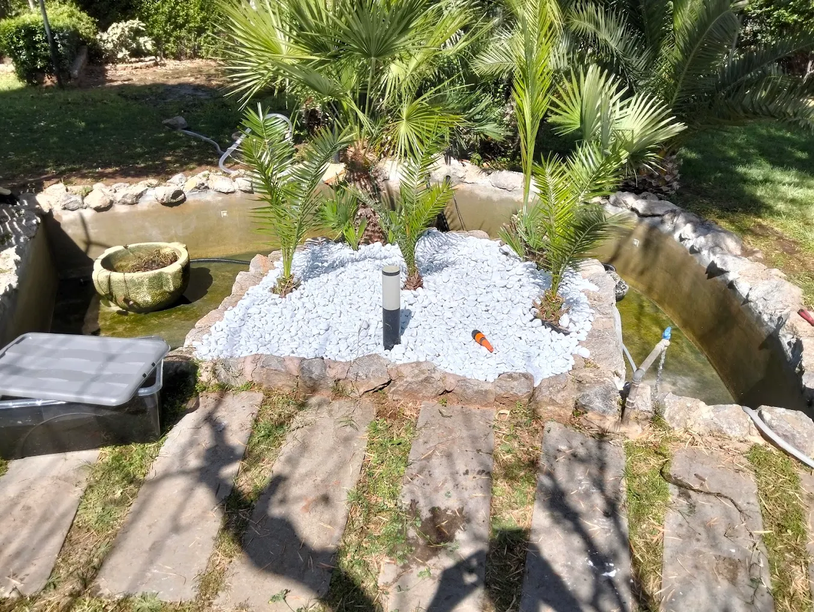
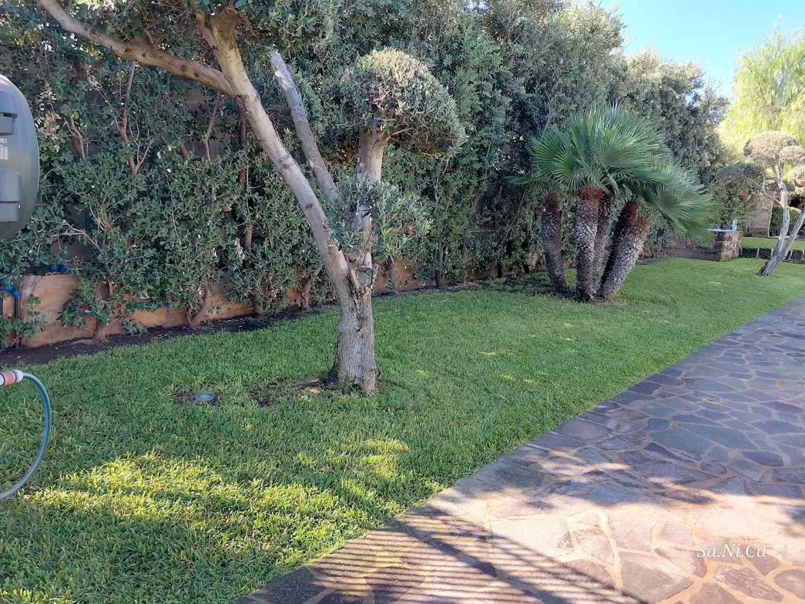

01 · SPAZIO
Organizzare
Definire le diverse aree e il loro rapporto all'interno del giardino.

Dare forma a uno spazio verde partendo da un'idea, dal contesto e dalle esigenze di chi lo vivrà.
Un giardino ben pensato nasce dall'equilibrio tra spazio, verde e modo di vivere l'ambiente.
Sa.Ni.Ca. si occupa di progettazione di giardini a Palermo e provincia, come parte del percorso che può portare dall'idea alla realizzazione e alla successiva cura del verde.
Definire le diverse aree e il loro rapporto all'interno del giardino.
Costruire un insieme coerente tra prato, aiuole, alberi e piante.
Portare il progetto verso uno spazio concreto, pronto a essere vissuto e curato.
Dimensioni, disposizione degli spazi, presenza di alberi e piante, prato, aiuole e soluzioni per l'irrigazione contribuiscono a definire il risultato finale.
La pagina definitiva verrà arricchita con esempi e dettagli dei progetti di Sa.Ni.Ca., non appena saranno disponibili le informazioni originali dei titolari.





Raccontaci il tuo progetto. Sa.Ni.Ca. — I Creatori del Verde, Palermo e provincia.